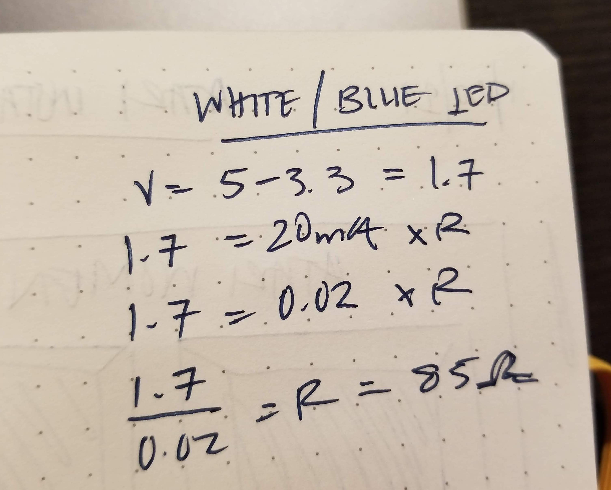

Assignment 2: Fade
Overview
Implement a schematic, circuit, and code that uses LEDs, a button, a for-loop, digitalWrite(), digitalRead(), and analogWrite().
A snippet of the schematic:

When assuming that LEDs are run at 20 mA, it is calculated that the white, blue, and red LED need 85, 85, and 160 Ohms of resistance, respectively. I used the 220 resistor for red LED, and 100 resistor for the blue and white LED.
What the circuit looks like:

Here's my code:
const int buttonPin = 2; // the number of the pushbutton pin
int buttonState = 0; // variable for reading the pushbutton status
void setup() {
for (int thisPin = 9; thisPin < 12; thisPin++) { // use a for loop to initialize pin 9 - 11 as output
pinMode(thisPin, OUTPUT);
}
// initialize the pushbutton pin as an input
pinMode(buttonPin, INPUT);
}
void loop() {
buttonState = digitalRead(buttonPin); // read the state of the pushbutton value
int thisPin = 9; // initialize start sequence at pin 9
if (buttonState == HIGH) { // check if pushbutton is pressed; if it is, buttonState is HIGH
for (int thisPin = 9; thisPin < 12; thisPin++) { // loop from the lowest pin to the highest:
for (int fadeValue = 0 ; fadeValue <= 250; fadeValue += 25) { // fade in from min to max in increments of 25 points
analogWrite(thisPin, fadeValue); // sets the value (range from 0 to 250):
// wait for 30 milliseconds to see the dimming effect
delay(30);
}
for (int fadeValue = 250 ; fadeValue >= 0; fadeValue -= 25) { // fade out from max to min in increments of 25 points
// sets the value (range from 0 to 250):
analogWrite(thisPin, fadeValue);
// wait for 30 milliseconds to see the dimming effect
delay(30);
}
}
} else { // check if pushbutton is pressed; if it is not, buttonState is LOW and turn off LED
digitalWrite(thisPin, LOW);
}
}
See it in action: